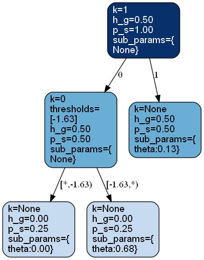
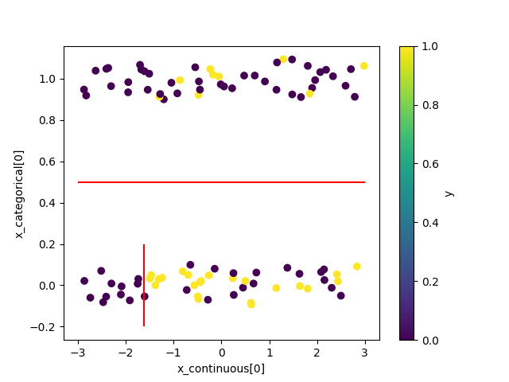
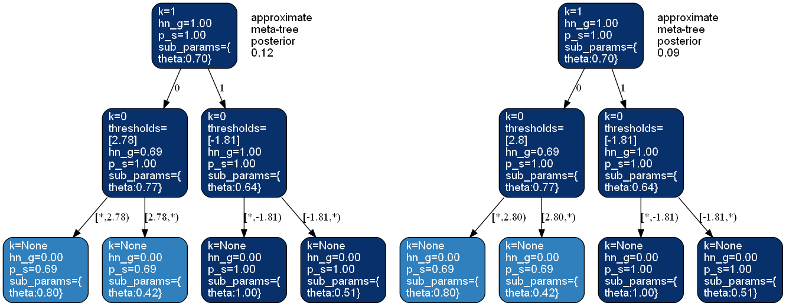

bayesml.metatree package#
モジュール内容#
このモジュールでは、ある種のベイズ決定木モデルとその事前分布を利用できます。


確率的データ生成モデル#
\(\boldsymbol{x}=[x_1, \ldots, x_p, x_{p+1}, \ldots , x_{p+q}]\)：説明変数です。最初の \(p\) 個の変数は連続変数です。残りの \(q\) 個の変数はカテゴリ変数です。
\(\mathcal{Y}\) : 目的変数の空間
\(y \in \mathcal{Y}\) : 目的変数
\(D_\mathrm{max} \in \mathbb{N}\) : 木の最大深さ
\(T_\mathrm{max}\)：すべての内部ノードが同じ数の子ノードを持ち、すべての葉ノードが同じ深さ \(D_\mathrm{max}\) を持つ完全木
\(\mathcal{S}_\mathrm{max}\)：\(T_\mathrm{max}\) のすべてのノードの集合
\(s \in \mathcal{S}_\mathrm{max}\) : 木のノード
\(\mathcal{I}_\mathrm{max} \subset \mathcal{S}_\mathrm{max}\)：\(T_\mathrm{max}\) のすべての内部ノードの集合
\(\mathcal{L}_\mathrm{max} \subset \mathcal{S}_\mathrm{max}\)：\(T_\mathrm{max}\) のすべての葉ノードの集合
\(\mathcal{T}\)：:\(T_\mathrm{max}\) の部分木からなる集合
\(T \in \mathcal{T}\)：\(T_\mathrm{max}\) の部分木
\(\mathcal{I}_T\)：\(T\) のすべての内部ノードの集合
\(\mathcal{L}_T\) : \(T\) のすべての葉ノードの集合
\(\boldsymbol{k}=(k_s)_{s \in \mathcal{I}_\mathrm{max}}\) : 内部ノードに割り当てられた特徴量のインデックス、すなわち \(k_s \in \{1, 2,\ldots,p+q\}\) です。もし \(k_s \leq p\) であれば、ノード \(s\) には閾値があります。
\(\mathcal{K}=\{ 1, 2, \ldots , p+q \}^{|\mathcal{I}_\mathrm{max}|}\) : すべての \(\boldsymbol{k}\) の集合
\(\boldsymbol{\theta}=(\theta_s)_{s \in \mathcal{S}}\) : ノードに割り当てられたパラメータ
\(s_{\boldsymbol{k},T}(\boldsymbol{x}) \in \mathcal{L}_T\)： \(T\) かつ \(\boldsymbol{k}\) の下で \(\boldsymbol{x}\) が到達する葉ノード
事前分布#
\(g_s \in [0,1]\)：各ノード \(s \in \mathcal{S}_\mathrm{max}\) に割り当てられるハイパーパラメータ。 \(T_\mathrm{max}\) の任意の葉ノード \(s\) について、\(g_s=0\) と仮定します。
パラメータ \(\theta_s\) の事前分布は、\(p(y | \theta_s)\) に対して共役事前分布であり、各ノードごとに独立していると仮定します。
事後分布#
事後分布は次のように近似されます：
\(n \in \mathbb{N}\): サンプルサイズ
\(\boldsymbol{x}^n = \{ \boldsymbol{x}_1, \boldsymbol{x}_2, \ldots, \boldsymbol{x}_n \}\)
\(\boldsymbol{x}_{s, \boldsymbol{k}}\)：\(\boldsymbol{k}\) の下で \(s\) を通過するデータ点の説明変数です。
\(y^n = \{ y_1, y_2, \ldots, y_n \}\)
\(y_{s, \boldsymbol{k}}\)：\(\boldsymbol{k}\) の下で \(s\) を通過するデータ点の目的変数です。
まず、事後分布 \(p(\boldsymbol{k}, T, \boldsymbol{\theta} | \boldsymbol{x}^n, y^n)\) は、次のように分解できます：
\(\boldsymbol{\theta}\) については、共役事前分布を仮定しているため、事後分布 \(p(\boldsymbol{\theta} | \boldsymbol{x}^n, y^n, \boldsymbol{k}, T)\) を正確に計算することができます。
また、\(T\) についても、メタツリーと呼ばれる概念を用いることで、事後分布 \(p(T | \boldsymbol{x}^n, y^n, \boldsymbol{k})\) を正確に計算することができます。メタツリーは単一のツリーではなく、すべてのツリーの内部ノードに対して同じ特徴量の割り当て \(\boldsymbol{k}\) が与えられているツリーの集合です。 \(\boldsymbol{k}\) で定義されるメタツリー上の木々の事後分布は、以下の通りです：
ここで、\(g_{s|\boldsymbol{x}^n, y^n, \boldsymbol{k}} \in [0,1]\) は、\(\boldsymbol{x}^n\)、\(y^n\)、および \(\boldsymbol{k}\) から次のように計算できます：
ここで、\(\mathrm{Ch}(s)\) は、\(T_\mathrm{max}\) 上の \(s\) の子ノードの集合を表し、\(q(y_{s, \boldsymbol{k}}|\boldsymbol{x}_{s, \boldsymbol{k}}, s, \boldsymbol{k})\) は、任意の \(s \in \mathcal{S}_\mathrm{max}\) に対して次のように定義されます。
ここで、\(f(y_{s, \boldsymbol{k}} | \boldsymbol{x}_{s, \boldsymbol{k}}, s, \boldsymbol{k})\) は次のように定義されます：
\(\boldsymbol{k}\) について、事後分布 \(p(\boldsymbol{k} | \boldsymbol{x}^n, y^n)\) を近似するアルゴリズムとして、メタツリー・ランダムフォレスト（MTRF）とメタツリー・マルコフ連鎖モンテカルロ（MTMCMC）法の2つがあります。
MTRFによる近似#
MTRFでは、まず通常の（非ベイズ）ランダムフォレストアルゴリズムを用いて、特徴量割り当てベクトルの集合 \(\mathcal{K}' = \{\boldsymbol{k}_1, \boldsymbol{k}_2, \ldots, \boldsymbol{k}_B\}\) を構築します。 次に、\(\boldsymbol{k} \in \mathcal{K}\) について、事後分布 \(p(\boldsymbol{k} | \boldsymbol{x}^n, y^n)\) を次のように近似します：
ここで、\(s_{\lambda}\) は \(T_\mathrm{max}\) の根ノードです。
予測分布は次のように近似されます：
ここで、\(q(y_{n+1}|\boldsymbol{x}_{n+1},\boldsymbol{x}^n, y^n, s_\lambda, \boldsymbol{k})\) は、 \(q(y_{s_\lambda, \boldsymbol{k}}|\boldsymbol{x}_{s_\lambda, \boldsymbol{k}}, s_\lambda, \boldsymbol{k})\) と同様の方法で計算されます。
予測分布の期待値は、次のように近似されます。
ここで、\(q\) の期待値は、次のように再帰的に与えられます。
ここで、\(f(y_{n+1}|\boldsymbol{x}_{n+1},\boldsymbol{x}^n, y^n, s, \boldsymbol{k})\) は、 \(f(y_{s, \boldsymbol{k}} | \boldsymbol{x}_{s, \boldsymbol{k}}, s, \boldsymbol{k}\) と同様の方法で計算され、 \(s_\mathrm{child}\) は、根ノードから葉ノード \(s_{\boldsymbol{k},T_\mathrm{max}}(\boldsymbol{x}_{n+1})\) へのパス上の \(s\) の子ノードとなります。
MTMCMCによる近似#
MTMCMC法では、MCMC法を用いて事後分布 \(p(\boldsymbol{k} | \boldsymbol{x}^n, y^n)\) から標本 \(\boldsymbol{k}\) を生成し、この標本の経験分布によって事後分布を近似します。 得られた標本を \(\{\boldsymbol{k}^{(t)}\}_{t=1}^{t_\mathrm{end}}\) とします。
予測分布#
予測分布は次のように近似されます：
予測分布の期待値は、次のように近似されます：
参照#
Dobashi, N.; Saito, S.; Nakahara, Y.; Matsushima, T. Meta-Tree Random Forest: Probabilistic Data-Generative Model and Bayes Optimal Prediction. Entropy 2021, 23, 768. https://doi.org/10.3390/e23060768
Nakahara, Y.; Saito, S.; Kamatsuka, A.; Matsushima, T. Probability Distribution on Full Rooted Trees. Entropy 2022, 24, 328. https://doi.org/10.3390/e24030328
Nakahara, Y.; Saito, S.; Ichijo, N.; Kazama, K.; Matsushima, T. Bayesian Decision Theory on Decision Trees: Uncertainty Evaluation and Interpretability. Proceedings of The 28th International Conference on Artificial Intelligence and Statistics, in Proceedings of Machine Learning Research 2025, 258:1045-1053 Available from https://proceedings.mlr.press/v258/nakahara25a.html.
GitHubスターのお願い#

クラス#
- class bayesml.metatree.GenModel(c_dim_continuous, c_dim_categorical, c_max_depth=2, c_num_children_vec=2, c_num_assignment_vec=None, c_ranges=None, SubModel=bernoulli, sub_constants={}, root=None, h_k_weight_vec=None, h_g=0.5, sub_h_params={}, h_metatree_list=[], h_metatree_prob_vec=None, seed=None)#
ベースクラス:
Generative確率的データ生成モデルと事前分布
- パラメータ:
- c_dim_continuousint
非負の整数
- c_dim_categoricalint
非負の整数
- c_num_children_vecnumpy.ndarray, optional
長さが
c_dim_continuous+c_dim_categoricalである正の整数のベクトルで、デフォルトでは [2,2,...,2] となります。 最初のc_dim_continuous個の要素は、内部ノードにおける連続型特徴の子要素の数を表します。残りのc_dim_categorical個の要素は、カテゴリ型特徴の子要素の数を表します。単一の整数が入力された場合、それはブロードキャストされます。- c_max_depthint, オプション
正の整数（デフォルトは2）
- c_num_assignment_vecnumpy.ndarray, optional
長さが
c_dim_continuous+c_dim_categoricalである正の整数のベクトルです。最初のc_dim_continuous個の要素は、パス上の連続型特徴の最大割り当て数を表します。 残りのc_dim_categorical個の要素は、カテゴリ型特徴量の最大割り当て数を表します。負の要素（例：-1）が含まれる場合、対応する特徴量は何度でも割り当てられます。デフォルトでは [-1,...,-1] です。- c_rangesnumpy.ndarray, optional
サイズが (c_dim_continuous,2) の numpy.ndarray です。「k」番目の連続特徴量に対する閾値は、「c_ranges[k,0]」と「c_ranges[k,1]」の間で生成されます。デフォルトでは、[[-3,3],[-3,3],...,[-3,3]] となります。
- SubModelclass, optional
ベルヌーイ、カテゴリカル、ポアソン、正規、指数、または線形回帰。デフォルトはベルヌーイです。
- sub_constantsdict, optional
self.SubModel.GenModel の定数。デフォルトは {} です
- rootmetatree._Node, optional
メタツリーの根ノードです。デフォルトでは、木は1つのノードのみで構成されます。
- h_k_weight_vecnumpy.ndarray, optional
長さが
c_dim_continuous+c_dim_categoricalである正の実数のベクトルで、デフォルトでは [1,...,1] です。- h_gfloat, optional
0以上1以下の実数で、デフォルトは 0.5 です
- sub_h_paramsdict, optional
self.SubModel.GenModel の h_params は、デフォルトで {} です
- h_metatree_listlist of metatree._Node, optional
メタツリーの根ノード、デフォルトでは [] です
- h_metatree_prob_vecnumpy.ndarray, optional
\([0, 1]\) 内の実数のベクトルで、h_metatree_list の事前分布を表します。デフォルトでは一様分布となります。要素の和は 1.0 でなければなりません。
- seed{None, int}, optional
numpy.random.default_rng() を初期化するシード値です。デフォルトでは None
- 属性:
- c_dim_features: int
c_dim_continuous + c_dim_categorical
メソッド
gen_params([feature_fix, threshold_fix, ...])事前分布からパラメータを生成します。
gen_sample([sample_size, x_continuous, ...])確率的データ生成モデルからサンプルを生成します。
GenModel の定数を取得します。
事前分布のハイパーパラメータを取得します。
確率的データ生成モデルのパラメータを取得します。
load_h_params(filename)h_paramsにハイパーパラメータをロードします。
load_params(filename)save_paramsに保存されたパラメータをロードします。save_h_params(filename)python
pickleモジュールを使ってハイパーパラメータを保存します。save_params(filename)python の
pickleモジュールを使ってパラメータを保存します。save_sample(filename, sample_size[, x])生成されたサンプルを NumPy
.npzフォーマットで保存します。set_h_params([h_k_weight_vec, h_g, ...])事前分布のハイパーパラメータを設定します。
set_params([root])確率的データ生成モデルのパラメータを設定します。
visualize_model([filename, format, ...])確率的データ生成モデルと生成されたサンプルを可視化します。
- get_constants()#
GenModel の定数を取得します。
- 返り値:
- constantsdict of {str: int, numpy.ndarray}
- set_h_params(h_k_weight_vec=None, h_g=None, sub_h_params=None, h_metatree_list=None, h_metatree_prob_vec=None)#
事前分布のハイパーパラメータを設定します。
- パラメータ:
- h_k_weight_vecnumpy.ndarray, optional
長さが
c_dim_continuous+c_dim_categoricalである正の実数のベクトルです。デフォルトでは None です。- h_gfloat, optional
\([0, 1]\) 内の実数。デフォルトは
Noneです- sub_h_paramsdict, optional
self.SubModel.GenModel の h_params は、デフォルトでは None です
- h_metatree_listlist of metatree._Node, optional
メタツリーのルートノード。デフォルトでは None です
- h_metatree_prob_vecnumpy.ndarray, optional
h_metatree_list の事前分布を表す:math:[0, 1] 内の実数のベクトルです。デフォルトは None です。要素の合計は 1.0 でなければなりません。
- get_h_params()#
事前分布のハイパーパラメータを取得します。
- gen_params(feature_fix=False, threshold_fix=False, tree_fix=False, threshold_type='even')#
事前分布からパラメータを生成します。
生成された値は
self.rootに設定されます。- パラメータ:
- feature_fixbool, optional
「True」の場合、特徴量の割り当てインデックスは固定されます。デフォルトは「False」です。
- threshold_fixbool, optional
「True」の場合、連続型特徴量の閾値は固定されます。デフォルトは「False」です。「feature_fix」が「False」の場合、「threshold_fix」は「False」でなければなりません。
- tree_fixbool, optional
「True」の場合、ツリーの形状は固定されます。デフォルトは「False」です。「feature_fix」が「False」の場合、「tree_fix」は「False」でなければなりません。
- しきい値の種類{'even', 'random'}, optional
しきい値を生成する手順の一種で、デフォルトは
'even'です。'even'の場合、self.c_ranges は等間隔で再帰的に分割されます。'random'の場合、self.c_ranges はランダムな間隔で再帰的に分割されます。
- set_params(root=None)#
確率的データ生成モデルのパラメータを設定します。
- パラメータ:
- rootmetatree._Node, optional
メタツリーの根ノード。デフォルトではNoneです。
- get_params()#
確率的データ生成モデルのパラメータを取得します。
- 返り値:
- paramsdict of {str:metatree._Node}
"root":self.rootの値です。
- gen_sample(sample_size=None, x_continuous=None, x_categorical=None)#
確率的データ生成モデルからサンプルを生成します。
- パラメータ:
- sample_sizeint, オプション
正の整数、デフォルトは
Noneです。- x_continuousnumpy.ndarray, optional
サイズが
(sample_size,c_dim_continuous)である2次元のfloat配列です。デフォルトではNoneです。- x_categoricalnumpy.ndarray, optional
サイズが
(sample_size,c_dim_categorical)である 2 次元の int 配列です。デフォルトでは None です。各要素 x_categorical[i,j] は、0 <= x_categorical[i,j] < self.c_num_children_vec[self.c_dim_continuous+j] を満たす必要があります。
- 返り値:
- x_continuousnumpy.ndarray
サイズが
(sample_size,c_dim_continuous)である2次元のfloat型配列です。- x_categoricalnumpy.ndarray, optional
サイズが
(sample_size,c_dim_categorical)である 2 次元の int 配列です。各要素 x_categorical[i,j] は、0 <= x_categorical[i,j] < self.c_num_children_vec[self.c_dim_continuous+j] を満たす必要があります。- ynumpy.ndarray
サイズが「sample_size」の1次元配列です。
- save_sample(filename, sample_size, x=None)#
生成されたサンプルを NumPy
.npzフォーマットで保存します。キーワード "x "でNpzFileとして保存されます。
- パラメータ:
- filenamestr
サンプルを保存するファイル名。ない場合は
.npzが追加されます。- sample_sizeint, オプション
正の整数、デフォルトは
Noneです。- x_continuousnumpy.ndarray, optional
サイズが
(sample_size,c_dim_continuous)である2次元のfloat配列です。デフォルトではNoneです。- x_categoricalnumpy.ndarray, optional
サイズが
(sample_size,c_dim_categorical)である 2 次元の int 配列です。デフォルトでは None です。各要素 x_categorical[i,j] は、0 <= x_categorical[i,j] < self.c_num_children_vec[self.c_dim_continuous+j] を満たす必要があります。
- visualize_model(filename=None, format=None, sample_size=100, x_continuous=None, x_categorical=None)#
確率的データ生成モデルと生成されたサンプルを可視化します。
なお、カテゴリカル特徴量の値にはジッターが適用されます。
- パラメータ:
- filenamestr, optional
図を保存する際のファイル名。デフォルトは「None」です
- formatstr, optional
レンダリングの出力形式（「pdf」、 「png」など）。
- sample_sizeint, オプション
正の整数、デフォルトは100
- x_continuousnumpy.ndarray, optional
サイズが
(sample_size,c_dim_continuous)である2次元のfloat配列です。デフォルトではNoneです。- x_categoricalnumpy.ndarray, optional
サイズが
(sample_size,c_dim_categorical)である 2 次元の int 配列です。デフォルトでは None です。各要素 x_categorical[i,j] は、0 <= x_categorical[i,j] < self.c_num_children_vec[self.c_dim_continuous+j] を満たす必要があります。
例
>>> from bayesml import metatree >>> model = metatree.GenModel( >>> c_dim_continuous=1, >>> c_dim_categorical=1) >>> model.gen_params(threshold_type='random') >>> model.visualize_model()
- class bayesml.metatree.LearnModel(c_dim_continuous, c_dim_categorical, c_max_depth=2, c_num_children_vec=2, c_num_assignment_vec=None, c_ranges=None, SubModel=bernoulli, sub_constants={}, h0_k_weight_vec=None, h0_g=0.5, sub_h0_params={}, h0_metatree_list=[], h0_metatree_prob_vec=None)#
ベースクラス:
Posterior,PredictiveMixin事後分布と予測分布
- パラメータ:
- c_dim_continuousint
非負の整数
- c_dim_categoricalint
非負の整数
- c_max_depthint, オプション
正の整数（デフォルトは2）
- c_num_children_vecnumpy.ndarray, optional
長さが
c_dim_continuous+c_dim_categoricalである正の整数のベクトルで、デフォルトでは [2,2,...,2] となります。 最初のc_dim_continuous個の要素は、内部ノードにおける連続型特徴の子要素の数を表します。残りのc_dim_categorical個の要素は、カテゴリ型特徴の子要素の数を表します。単一の整数が入力された場合、それはブロードキャストされます。- c_num_assignment_vecnumpy.ndarray, optional
長さが
c_dim_continuous+c_dim_categoricalである正の整数のベクトルです。最初のc_dim_continuous個の要素は、パス上の連続型特徴の最大割り当て数を表します。 残りのc_dim_categorical個の要素は、カテゴリ型特徴量の最大割り当て数を表します。負の要素（例：-1）が含まれる場合、対応する特徴量は何度でも割り当てられます。デフォルトでは [-1,...,-1] です。- c_rangesnumpy.ndarray, optional
サイズが (c_dim_continuous,2) の numpy.ndarray です。「k」番目の連続特徴量に対する閾値は、「c_ranges[k,0]」と「c_ranges[k,1]」の間で生成されます。デフォルトでは、[[-3,3],[-3,3],...,[-3,3]] となります。
- SubModelclass, optional
ベルヌーイ、カテゴリカル、ポアソン、正規、指数、または線形回帰。デフォルトはベルヌーイです。
- sub_constantsdict, optional
self.SubModel.LearnModel の定数。デフォルトは {} です
- h0_k_weight_vecnumpy.ndarray, optional
長さが
c_dim_continuous+c_dim_categoricalである正の実数のベクトルで、デフォルトでは [1,...,1] です。- h0_gfloat, optional
0以上1以下の実数で、デフォルトは 0.5 です
- sub_h0_paramsdict, optional
self.SubModel.LearnModel の h0_params は、デフォルトで {} です
- h0_metatree_listlist of metatree._Node, optional
メタツリーの根ノード、デフォルトでは [] です
- h0_metatree_prob_vecnumpy.ndarray, optional
\([0, 1]\) 内の実数のベクトルで、h0_metatree_list の事前分布を表します。デフォルトでは一様分布となります。要素の和は 1.0 でなければなりません。
- 属性:
- c_dim_features: int
c_dim_continuous + c_dim_categorical
- hn_k_weight_vecnumpy.ndarray
長さが
c_dim_continuous+c_dim_categoricalである正の実数のベクトル- hn_gfloat
:math:`[0, 1]`に属する実数
- sub_hn_paramsdict
self.SubModel.LearnModel の hn_params
- hn_metatree_listmetatree._Node のリスト
メタツリーの根ノード
- hn_metatree_prob_vecnumpy.ndarray
h0_metatree_list の事前分布を表す、\([0, 1]\) 内の実数のベクトルです。その要素の和は 1.0 になります。
メソッド
特徴量の重要度を計算します
予測分布の確率密度関数の値の計算
calc_pred_dist([x_continuous, x_categorical])予測分布のパラメータを計算します。
予測分布の分散を計算
estimate_params([loss, visualize, filename, ...])与えられた基準に基づいたパラメータ推定
fit([x_continuous, x_categorical, y, alg_type])モデルをデータに当てはめます。
LearnModel の定数を取得します。
事前分布のハイパーパラメータを取得します。
事後分布のハイパーパラメータを取得します。
予測分布のパラメータを取得します。
load_h0_params(filename)h0_paramsにハイパーパラメータをロードします。
load_hn_params(filename)hn_paramsにハイパーパラメータをロードします。
make_prediction([loss])与えられた基準の下で、新しいデータ点を予測します。
overwrite_h0_params()事後分布のハイパーパラメータの初期値を学習した値で上書きします。
pred_and_update([x_continuous, ...])逐次的に新しいデータ点を予測し、事後分布を更新します。
predict([x_continuous, x_categorical])データを予測
predict_proba([x_continuous, x_categorical])データを予測
reset_hn_params()事後分布のハイパーパラメータを初期値に戻します。
save_h0_params(filename)python
pickleモジュールを使ってハイパーパラメータを保存します。save_hn_params(filename)python
pickleモジュールを使ってハイパーパラメータを保存します。set_h0_params([h0_k_weight_vec, h0_g, ...])事前分布のハイパーパラメータを設定します。
set_hn_params([hn_k_weight_vec, hn_g, ...])事後分布のハイパーパラメータを設定します。
update_posterior([x_continuous, ...])訓練データを使って事後分布のハイパーパラメータを更新します。
visualize_posterior([filename, format, ...])パラメータの事後分布を可視化します。
- get_constants()#
LearnModel の定数を取得します。
- 返り値:
- constantsdict of {str: int, numpy.ndarray}
- set_h0_params(h0_k_weight_vec=None, h0_g=None, sub_h0_params=None, h0_metatree_list=None, h0_metatree_prob_vec=None)#
事前分布のハイパーパラメータを設定します。
- パラメータ:
- h0_k_weight_vecnumpy.ndarray, optional
長さが
c_dim_continuous+c_dim_categoricalである正の実数のベクトルです。デフォルトでは None です。- h0_gfloat, optional
\([0, 1]\) 内の実数。デフォルトは
Noneです- sub_h0_paramsdict, optional
self.SubModel.LearnModel の h0_params は、デフォルトでは None です
- h0_metatree_listlist of metatree._Node, optional
メタツリーのルートノード。デフォルトでは None です
- h0_metatree_prob_vecnumpy.ndarray, optional
h0_metatree_list の事前分布を表す、\([0, 1]\) の実数ベクトルです。デフォルトは None です。要素の合計は 1.0 でなければなりません。
- get_h0_params()#
事前分布のハイパーパラメータを取得します。
- set_hn_params(hn_k_weight_vec=None, hn_g=None, sub_hn_params=None, hn_metatree_list=None, hn_metatree_prob_vec=None)#
事後分布のハイパーパラメータを設定します。
- パラメータ:
- hn_k_weight_vecnumpy.ndarray, optional
長さが
c_dim_continuous+c_dim_categoricalである正の実数のベクトルです。デフォルトでは None です。- hn_gfloat, optional
\([0, 1]\) 内の実数。デフォルトは
Noneです- sub_hn_paramsdict, optional
self.SubModel.LearnModel の hn_params は、デフォルトでは None です
- hn_metatree_listlist of metatree._Node, optional
メタツリーのルートノード。デフォルトでは None です
- hn_metatree_prob_vecnumpy.ndarray, optional
\([0, 1]\) の実数のベクトルで、hn_metatree_list の事前分布を表します。デフォルトは None です。要素の合計は 1.0 でなければなりません。
- get_hn_params()#
事後分布のハイパーパラメータを取得します。
- update_posterior(x_continuous=None, x_categorical=None, y=None, alg_type='MTRF', **kwargs)#
訓練データを使って事後分布のハイパーパラメータを更新します。
- パラメータ:
- x_continuousnumpy.ndarray, optional
サイズが
(sample_size,c_dim_continuous)である2次元のfloat配列です。デフォルトではNoneです。- x_categoricalnumpy.ndarray, optional
サイズが
(sample_size,c_dim_categorical)である 2 次元の int 配列です。デフォルトでは None です。各要素 x_categorical[i,j] は、0 <= x_categorical[i,j] < self.c_num_children_vec[self.c_dim_continuous+j] を満たす必要があります。- ynumpy.ndarray
dtypeがintまたはfloatである目的変数の値
- alg_type{'MTRF', 'given_MT', 'MTMCMC', 'REMTMCMC'}, optional
アルゴリズムの種類。デフォルトは「MTRF」です
- **kwargsdict, optional
アルゴリズムのオプションパラメータ。デフォルトは {} です。
alg_type='MTRF'の場合MTRF[1]では、
sklearn.ensemble.RandomForestClassifierまたはsklearn.ensemble.RandomForestRegressorがサブルーチンとして呼び出されます。**kwargsとして指定された引数は、これらのサブルーチンに渡されます。 したがって、これらのサブルーチンに対して、例えばn_estimatorsやrandom_stateなどのオプションを指定したい場合は、ここで指定することができます。ただし、これらのサブルーチンのmax_depthはself.c_max_depthの値に設定されているため、再度設定しようとするとエラーが発生します。
alg_type='given_MT’の場合'given_MT'にはオプションのパラメータはありません。
alg_type='MTMCMC’の場合burn_in : int
バーンイン段階の期間は、デフォルトで100です。
num_metatrees : int
バーンイン段階後のサンプリング回数は、デフォルトで500回です。
g_max : float
メトロポリス・ヘイスティングス法における提案分布のエントロピーを制御するためのパラメータの初期値です。デフォルトは 0.0 です。[2] の付録 B.4 も参照してください。
g_maxは、[2] のアルゴリズム 1 によってバーンイン段階で調整されます。rho : float
[2]のアルゴリズム1のパラメータで、デフォルト値は0.99です。
phi : float
[2]のアルゴリズム1のパラメータで、デフォルト値は0.999です。
p_obj : float
[2]のアルゴリズム1のパラメータで、デフォルト値は0.3です。
p_objは、[2]のアルゴリズム1における$r_\mathrm{obj}$に対応します。threshold_type : {'1d_kmeans', 'sample_midpoint'}
連続説明変数の閾値を生成するルールで、デフォルトでは
'1d_kmeans'です。[2] の付録 G も参照してください。seed : {None, int}, 省略可
numpy.random.default_rng()を初期化するためのシード。デフォルトはNone。
alg_type='REMTMCMC’の場合burn_in : int
バーンイン段階の期間は、デフォルトで100です。
num_metatrees : int
バーンイン段階後のサンプリング回数は、デフォルトで500回です。
num_chains : int
レプリカ交換モンテカルロ法におけるレプリカの数。デフォルトでは8です。これは[2]の付録Dにおける$J$に相当します。
g_max : float
メトロポリス・ヘイスティングス法における提案分布のエントロピーを制御するパラメータで、デフォルト値は 0.9 です。MTMCMC とは異なり、バーンイン段階では
g_maxの調整は行われません。[2] の付録 B.4 も参照してください。beta_vec : {None, numpy.ndarray}
レプリカ交換モンテカルロ法における温度パラメータ。デフォルトは None です。$0 \leq \beta_1 < \beta_2 < \cdots < \beta_J = 1$ を満たす必要があります。None の場合、$\beta_j = j/J$ となります。[2] の付録 D も参照してください。
num_interval : int
レプリカ交換プロセス間の間隔の長さ。デフォルトは10です。[2]の付録Dも参照してください。
num_exchange : int
1回のレプリカ交換プロセスで交換されるレプリカの数。デフォルトは4です。[2]の付録Dも参照してください。
threshold_type : {'1d_kmeans', 'sample_midpoint'}
連続説明変数の閾値を生成するルールで、デフォルトでは
'1d_kmeans'です。[2] の付録 G も参照してください。seed : {None, int}, 省略可
numpy.random.default_rng()を初期化するためのシード。デフォルトはNone。
参照
[1]Dobashi, N., Saito, S., Nakahara, Y., & Matsushima, T. (2021). Meta-Tree Random Forest: Probabilistic Data-Generative Model and Bayes Optimal Prediction. Entropy, 23(6), 768. Available from https://doi.org/10.3390/e23060768
[2]Nakahara, Y., Saito, S., Ichijo, N., Kazama, K. & Matsushima, T. (2025). Bayesian Decision Theory on Decision Trees: Uncertainty Evaluation and Interpretability. Proceedings of The 28th International Conference on Artificial Intelligence and Statistics, in Proceedings of Machine Learning Research 258:1045-1053 Available from https://proceedings.mlr.press/v258/nakahara25a.html.
- estimate_params(loss='0-1', visualize=True, filename=None, format=None)#
与えられた基準に基づいたパラメータ推定
近似MAPメタツリー \(M_{T,\boldsymbol{k}_b} = \mathrm{argmax} p(M_{T,\boldsymbol{k}_{b'}} | \boldsymbol{x}^n, y^n)\) が返されます。
- パラメータ:
- lossstr, optional
ベイズリスク関数の基礎となる損失関数で、デフォルトでは
"0-1"です。この関数は"0-1"のみをサポートしています。- visualizebool, optional
「True」の場合、推定されたメタツリーが可視化されます。デフォルトでは「True」です。この可視化には「graphviz」が必要です。
- filenamestr, optional
図を保存する際のファイル名。デフォルトは「None」です
- formatstr, optional
レンダリングの出力形式（「pdf」、 「png」など）。
- 返り値:
- map_rootmetatree._Node
推定されたメタツリーの根ノードであり、各ノードには推定されたパラメータも含まれています。
警告
複数のメタツリーが、同等のモデルクラスを表す場合があります。この関数は、そのような重複を考慮していません。
- visualize_posterior(filename=None, format=None, num_metatrees=3, h_params=False)#
パラメータの事後分布を可視化します。
この方法には「graphviz」が必要です。
- パラメータ:
- filenamestr, optional
図を保存する際のファイル名。デフォルトは「None」です
- formatstr, optional
レンダリングの出力形式（「pdf」、 「png」など）。
- num_metatreesint, オプション
表示するメタツリーの数。デフォルトは3です。
- h_paramsbool, optional
「True」の場合、各ノードのハイパーパラメータが表示されます。「False」の場合、各ノードの推定パラメータが表示されます。
例
>>> from bayesml import metatree >>> gen_model = metatree.GenModel( >>> c_dim_continuous=1, >>> c_dim_categorical=1) >>> gen_model.gen_params(threshold_type='random') >>> x_continuous,x_categorical,y = gen_model.gen_sample(200) >>> learn_model = metatree.LearnModel( >>> c_dim_continuous=1, >>> c_dim_categorical=1) >>> learn_model.update_posterior(x_continuous,x_categorical,y) >>> learn_model.visualize_posterior(num_metatrees=2)

- get_p_params()#
予測分布のパラメータを取得します。
このモデルには、予測分布を表す単純なパラメトリック式がありません。そのため、この関数は「None」を返します。
- 返り値:
None
- calc_pred_dist(x_continuous=None, x_categorical=None)#
予測分布のパラメータを計算します。
- パラメータ:
- x_continuousnumpy.ndarray, optional
サイズが
(sample_size,c_dim_continuous)である2次元のfloat配列です。デフォルトではNoneです。- x_categoricalnumpy.ndarray, optional
サイズが
(sample_size,c_dim_categorical)である 2 次元の int 配列です。デフォルトでは None です。各要素 x_categorical[i,j] は、0 <= x_categorical[i,j] < self.c_num_children_vec[self.c_dim_continuous+j] を満たす必要があります。
- make_prediction(loss=None)#
与えられた基準の下で、新しいデータ点を予測します。
- パラメータ:
- lossstr, optional
ベイズリスク関数の基礎となる損失関数です。デフォルトでは None です。この関数は、「squared」、「0-1」、および「KL」をサポートしています。損失関数が None の場合、サブモデルが回帰モデル（正規、ポアソン、指数、または線形回帰）であるときは「squared」が使用され、サブモデルが分類モデル（ベルヌーイまたはカテゴリカル）であるときは「0-1」が使用されます。
- 返り値:
- Predicted_valuesnumpy.ndarray
指定された損失関数に基づく予測値です。サブモデルが分類モデル（ベルヌーイまたはカテゴリカル）であり、損失関数が「KL」の場合、予測分布は出現確率からなるnumpy.ndarrayとして返されます。
calc_pred_dist(x_continuous, x_categorical) を呼び出した際、予測値のサイズまたは予測分布の数は、x_continuous および x_categorical の標本サイズと同じになります。
- pred_and_update(x_continuous=None, x_categorical=None, y=None, loss=None)#
逐次的に新しいデータ点を予測し、事後分布を更新します。
- パラメータ:
- x_continuousnumpy.ndarray, optional
サイズが
(sample_size,c_dim_continuous)である2次元のfloat配列です。デフォルトではNoneです。- x_categoricalnumpy.ndarray, optional
サイズが
(sample_size,c_dim_categorical)である 2 次元の int 配列です。デフォルトでは None です。各要素 x_categorical[i,j] は、0 <= x_categorical[i,j] < self.c_num_children_vec[self.c_dim_continuous+j] を満たす必要があります。- ynumpy.ndarray
dtypeがintまたはfloatである目的変数の値
- lossstr, optional
ベイズリスク関数の基礎となる損失関数です。デフォルトではNoneです。この関数は、「squared」、「0-1」、および「KL」をサポートしています。
- 返り値:
- Predicted_valuesnumpy.ndarray
指定された損失関数に基づく予測値です。サブモデルが分類モデル（ベルヌーイまたはカテゴリカル）であり、損失関数が「KL」の場合、予測分布は出現確率からなるnumpy.ndarrayとして返されます。
calc_pred_dist(x_continuous, x_categorical) を呼び出した際、予測値のサイズまたは予測分布の数は、x_continuous および x_categorical の標本サイズと同じになります。
- calc_pred_var()#
予測分布の分散を計算
- 返り値:
- varsnumpy.ndarray
予測分布の分散です。この分散のサイズは、calc_pred_dist(x) を呼び出した際の x のサンプルサイズと同じです。
- calc_feature_importances()#
特徴量の重要度を計算します
- 返り値:
- feature_importancesnumpy.ndarray
特徴量の重要度
- calc_pred_density(y)#
予測分布の確率密度関数の値の計算
- パラメータ:
- ynumpy.ndarray
y のサイズは (sample_size, ) にブロードキャスト可能なものでなければなりません。つまり、最後の次元のサイズは 1 または sample_size でなければなりません。ここで、sample_size は calc_pred_dist(x) を呼び出した際の x のサンプルサイズです。
- 返り値:
- p_ynumpy.ndarray
予測分布の確率密度関数の値です。
- fit(x_continuous=None, x_categorical=None, y=None, alg_type='MTRF', **kwargs)#
モデルをデータに当てはめます。
この関数は以下の関数のラッパーです：
>>> self.reset_hn_params() >>> self.update_posterior(x_continuous,x_categorical,y,alg_type,**kwargs) >>> return self
- パラメータ:
- x_continuousnumpy.ndarray, optional
サイズが
(sample_size,c_dim_continuous)である2次元のfloat配列です。デフォルトではNoneです。- x_categoricalnumpy.ndarray, optional
サイズが
(sample_size,c_dim_categorical)である 2 次元の int 配列です。デフォルトでは None です。各要素 x_categorical[i,j] は、0 <= x_categorical[i,j] < self.c_num_children_vec[self.c_dim_continuous+j] を満たす必要があります。- ynumpy.ndarray
dtypeがintまたはfloatである目的変数の値
- alg_type{'MTRF', 'given_MT', 'MTMCMC', 'REMTMCMC'}, optional
アルゴリズムの種類。デフォルトは「MTRF」です
- **kwargsdict, optional
アルゴリズムのオプションパラメータ。デフォルトは {} です
- 返り値:
- selfLearnModel
The fitted model.
- predict(x_continuous=None, x_categorical=None)#
データを予測
この関数は以下の関数のラッパーです：
>>> self.calc_pred_dist(x_continuous,x_categorical) >>> return self.make_prediction()
- パラメータ:
- x_continuousnumpy.ndarray, optional
サイズが
(sample_size,c_dim_continuous)である2次元のfloat配列です。デフォルトではNoneです。- x_categoricalnumpy.ndarray, optional
サイズが
(sample_size,c_dim_categorical)である 2 次元の int 配列です。デフォルトでは None です。各要素 x_categorical[i,j] は、0 <= x_categorical[i,j] < self.c_num_children_vec[self.c_dim_continuous+j] を満たす必要があります。
- 返り値:
- Predicted_valuesnumpy.ndarray
サブモデルが回帰モデル（正規、ポアソン、指数、または線形回帰）の場合、二乗損失関数に基づく予測値が返されます。サブモデルが分類モデル（ベルヌーイまたはカテゴリカル）の場合、0-1損失関数に基づく予測値が返されます。予測値のサイズは、x_continuous および x_categorical のサンプルサイズと同じです。
- predict_proba(x_continuous=None, x_categorical=None)#
データを予測
この関数は、サブモデルが分類モデル（bernoulli または categorical）である場合にサポートされます。これは、以下の関数のラッパーです：
>>> self.calc_pred_dist(x_continuous,x_categorical) >>> return self.make_prediction(loss="KL")
- パラメータ:
- x_continuousnumpy.ndarray, optional
サイズが
(sample_size,c_dim_continuous)である2次元のfloat配列です。デフォルトではNoneです。- x_categoricalnumpy.ndarray, optional
サイズが
(sample_size,c_dim_categorical)である 2 次元の int 配列です。デフォルトでは None です。各要素 x_categorical[i,j] は、0 <= x_categorical[i,j] < self.c_num_children_vec[self.c_dim_continuous+j] を満たす必要があります。
- 返り値:
- predicted_distributionsnumpy.ndarray
KL損失関数に基づく予測分布です。予測分布の数は、x_continuous および x_categorical の標本サイズと同じです。